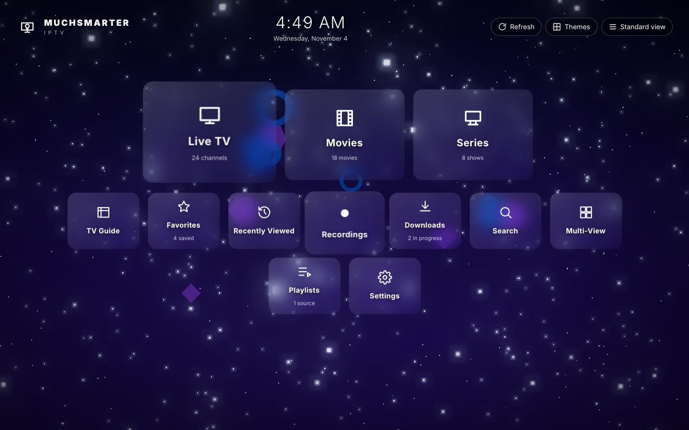
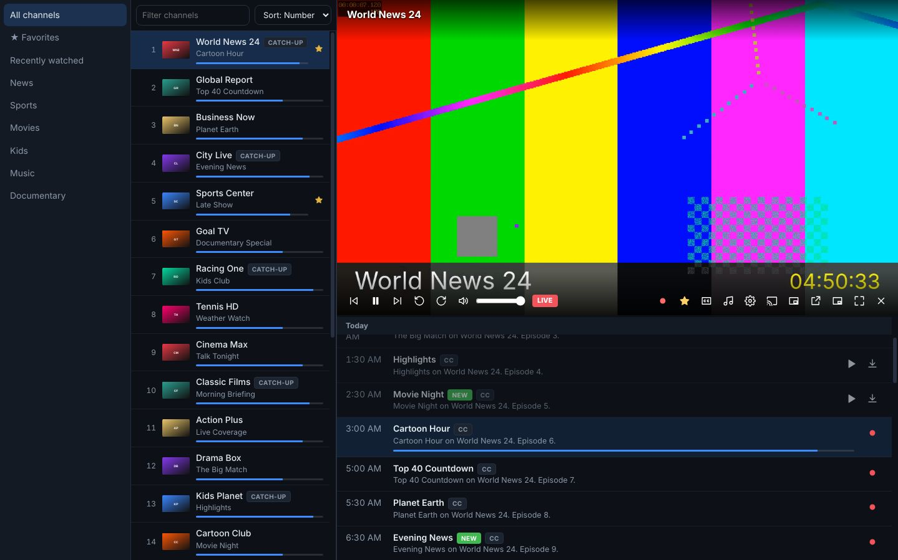
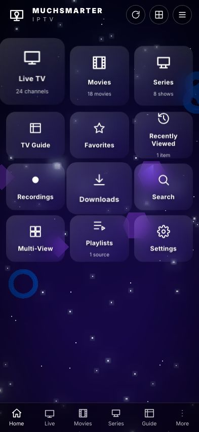
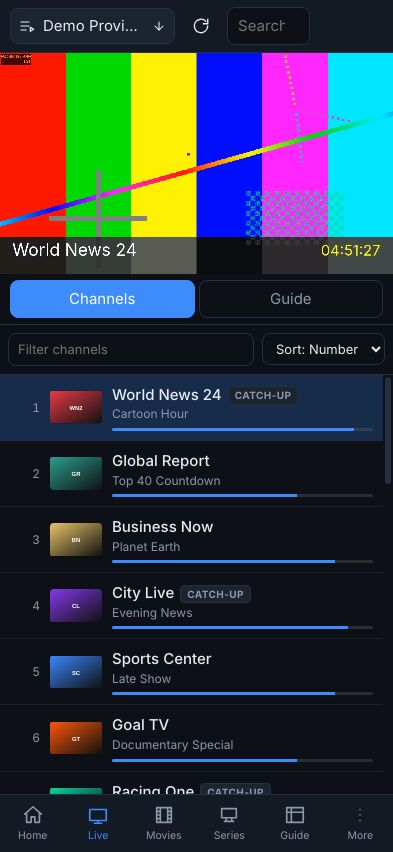
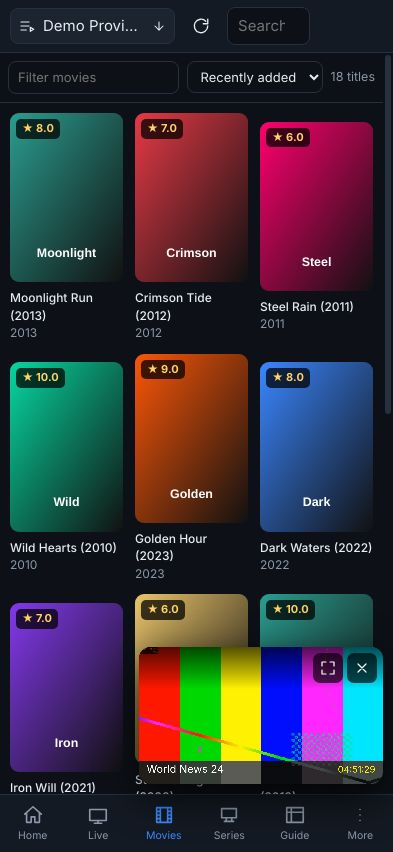
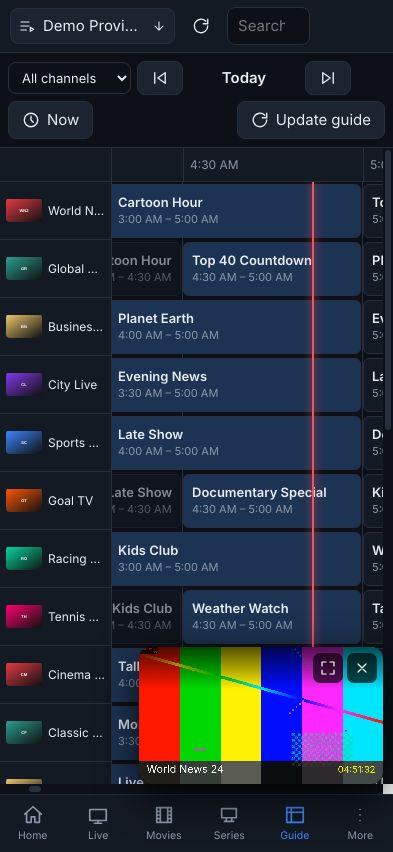

Every channel, movie and series. One smart remote.
An IPTV player for Xtream Codes, M3U playlists and Stalker portals, with a TV guide, catch-up, recording, downloads, casting and fully styled closed captions. The home screen is a live 3D scene; flip through the themes below.

Any IPTV login
Xtream Codes, M3U and M3U8 by link or file, Stalker/MAC portals, and XMLTV guides.
Record and catch up
Record now, schedule from the guide, repeat daily or weekly, or follow a whole series. Watch past shows from the archive.
Every screen size
Inline, full screen, picture-in-picture, a draggable mini player, pop-out windows and Multi-View with up to 9 channels.
Captions your way
Closed captions (CEA-608/708) and subtitles with your own size, font, colours, background and edge style.
A tour of the main screens
Real screenshots of version 1.0.0, connected to a demo provider.

Live TV
The same app, sized for your phone
A bottom tab bar, swipeable categories, and the player pinned above the channel list. Turn the phone sideways to go full screen.




What to install on each device
| Device | File | Size | How |
|---|---|---|---|
| Windows | MuchSmarter-1.0.0-Windows-Build-Kit.zip | 151 MB | Run BUILD MUCHSMARTER.cmd on the Cydcor build PC. Deploy the signed Setup.exe from its Output folder. |
| Mac (Apple chip) | MuchSmarter-1.0.0-mac-apple-silicon.zip | 125 MB | Unzip, drag to Applications, right-click > Open the first time. |
| Mac (Intel) | MuchSmarter-1.0.0-mac-intel.zip | 137 MB | Same as above. |
| Linux | MuchSmarter-1.0.0.AppImage | 144 MB | Make it executable and run it. Or install muchsmarter_1.0.0_amd64.deb (96 MB). |
| Android, Android TV, Fire TV | MuchSmarter-1.0.0.apk | 1 MB | Copy to the device and tap it (Android 8 or newer). |
| iPhone, iPad | MuchSmarter-mobile-project.zip | 5 MB | Build on a Mac with Xcode. Steps in mobile/BUILD-PHONE-APPS.md. |
| Everything | MuchSmarter-1.0.0-All-part1/2/3-of-3.zip | 660 MB | All of the above in three parts. Extract them into the same place. |
The files are attached in the Claude chat where this preview was made; this page shows the app and doesn't host the downloads. On Windows, the Cydcor signature is trusted on Cydcor-managed PCs. Personal PCs with Smart App Control on need a publicly trusted certificate.